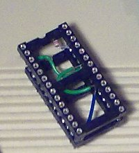
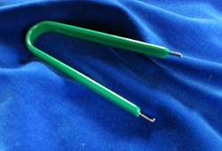

DWLOAD EPROM - instant DriveWire
The DWLOAD EPROM extends the BASIC ROM with the powerful DWLOAD utility, the easiest and fastest way to load programs over DriveWire from your uDW or PC.
 |
DWLOAD EPROM
DWLOAD is the easiest way to get started with DriveWire. No DOS needed, this ROM modification recycles the old "DLOAD" command to turbo charge your Dragon 32 or 64. Load files from your uDW or other DriveWire server as easy and fast as it possibly can get. This EPROM replaces the BASIC PROM on the motherboard. 100% compatible with the original Dragon 32 BASIC ROM.
|
Ordering and shipping information
DWLOAD lets you download programs from a DriveWire server to your Dragon. Although the DWLOAD utility can be loaded from tape or disk to get started, it really shines when it is integrated in the BASIC ROM - the DWLOAD EPROM.
- Use DriveWire from power-on - no more need for tape cables etc
- Auto-run programs on power-on
- Extended functionality can be loaded over DriveWire
- EPROM contains both Dragon 32 and Dragon 64 versions
- Replaces motherboard ROM, cartridge port remains free
- 100% compatible with original Dragon 32 BASIC
- No DOS required
On your Dragon 64, simply replace one of BASIC ROMs on the motherboard. On your Dragon 32 a 28-pin to 24-pin adapter is needed (sold separately). Note that some rare motherboards might have the original ROM soldered - please check before ordering.
The DWLOAD program takes the place of the non-functional DLOAD BASIC command. Simply type for instance DLOAD"MYPROG" to load the program "MYPROG" from the uDW or other DriveWire server. Works with both BASIC and machine language programs. Use "DLOADN" to just load a program without running it.
At power-on, a program "AUTOLOAD.DWL" will be loaded and run if it exists on the server. This can be any kind of program, for instance your favorite game or a start-up menu. Autoloading can be disabled by holding the shift key.
The DWLOAD EPROM ships in a anti-static IC carrier tube to safely protect pins during shipping.
Recommended hardware

|
uDW
The uDW DriveWire microserver is a standalone, SD card based mass-storage solution for your Dragon. Put all your programs and files onto an SD card and access them on the Dragon as if it had a floppy drive or PC-based DriveWire server. Plugs into the printer port, no other cables or power supplies needed.
|
 |
DriveWire deluxe adapter
The DriveWire deluxe adapter connects your Dragon to any modern computer having a USB port. The connected computer can serve as a virtual floppy station, super-fast tape replacement, MIDI instrument or relay your Dragon to the Internet!
|
 |
Dragon DriveWire adapter
The DriveWire DriveWire adapter connects your Dragon to any modern computer having a USB port, like the deluxe adapter. This is a simpler version and comes without any case. The economical way to enter the world of DriveWire!
|
Ordering and shipping information
Extras (not sold separately)
|  | EPROM adapter for Dragon 32
On the Dragon 32, a 28-pin to 24-pin adapter is needed to fit the DWLOAD EPROM to the motherboard socket. Can also be used for other 28-pin EPROMs. No adapter is needed on a Dragon 64.
|
|  | Chip puller
(Limited stock) Helps to remove the original PROM from the socket when fitting the DWLOAD EPROM.
|
Ordering and shipping information
More information, tips and discussions can be found in the Dragon forums on uDW, deluxe adapters, dw adapters, +32K, DWLOAD EPROMs
Acknowledgements
The DWLOAD command and modification of the Dragon 32 BASIC ROM was written by Tormod Volden. The adaption to the Dragon 64 BASIC ROM was done by Ken H. from the Dragon forums. Many loadable extensions ("dweebs") are written by Pere Serrat.
DWLOAD includes bit-banger routines from Darren Atkinson, and some parts are based on Boisy Pitre's DW3DOS utility.
Other DriveWire software for Dragon
- DWLOAD - the easiest way to use DriveWire link
- DosPlus extended with DriveWire support link
- HDBDOS ported to Dragon 32 (can also run from RAM) link
- NitrOS-9 for your Dragon 32 (memory extension recommended) link
- FUZIX for Dragon or CoCo2 (work in progress, additional hardware needed) link
This software can be downloaded for free and is open-source. See the respective web sites for licensing and authorship. There are many contributors, in some cases I am the project maintainer, and/or have written the Dragon port.
DriveWire server software
For running a DriveWire server on an external computer. Not needed when using the uDW.
Answers
See the FAQ and if that didn't help, contact me at